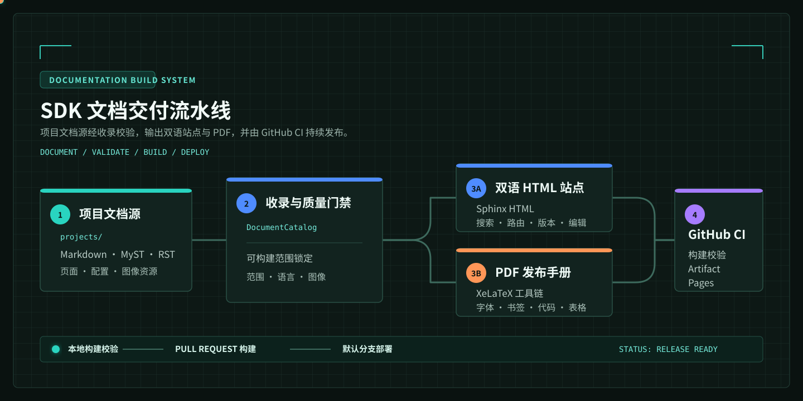

SDK 文档构建模板
从结构化内容到可发布文档站，不应依赖手工拼接。这个模板把作者真正维护的内容放在 projects 目录，将收录、导航、双语路由、PDF 排版、多版本构建和 GitHub Pages 发布纳入同一条可验证流水线。

当前站点就是一份可运行的样例
左侧导航、中文和 English 页面、搜索索引、深色模式、版本菜单、编辑入口与 PDF 下载按钮，均来自本仓库的构建结果。页面中的命令、配置与产物路径可以直接作为接入真实 SDK 或产品手册时的起点。
用 30 秒判断它是否适合你的仓库
你的内容形态 |
推荐能力 |
你会得到什么 |
|---|---|---|
教程、开发手册、知识库 |
递归文档树 |
保持原始目录层级，自动建立章节导航 |
SDK、BSP、示例工程集合 |
严格项目目录 |
只收录声明的项目入口和资源，避免第三方 README 混入 |
中英文产品文档 |
双语构建 |
独立页面、搜索索引和对应页语言跳转 |
需要可归档的交付物 |
XeLaTeX PDF |
封面、目录、书签、字体校验、代码和表格排版 |
维护多个发布分支 |
多版本发布 |
Git worktree 隔离构建、版本菜单和 Pages 入口 |
建议阅读路线
交付不是一次命令，而是一份契约
作者写入的内容、HTML 和 PDF 使用同一份 DocumentCatalog；这意味着网页里能看到的文档、下载 PDF 的章节和发布前被校验的资源保持一致。缺少图片、越出 projects 范围的路径、未匹配的项目规则和缺失的 PDF 字体都会显式失败，而不是在发布后留下不完整的页面。
想先看结果而不是先读理论，可直接进入 场景化示例。